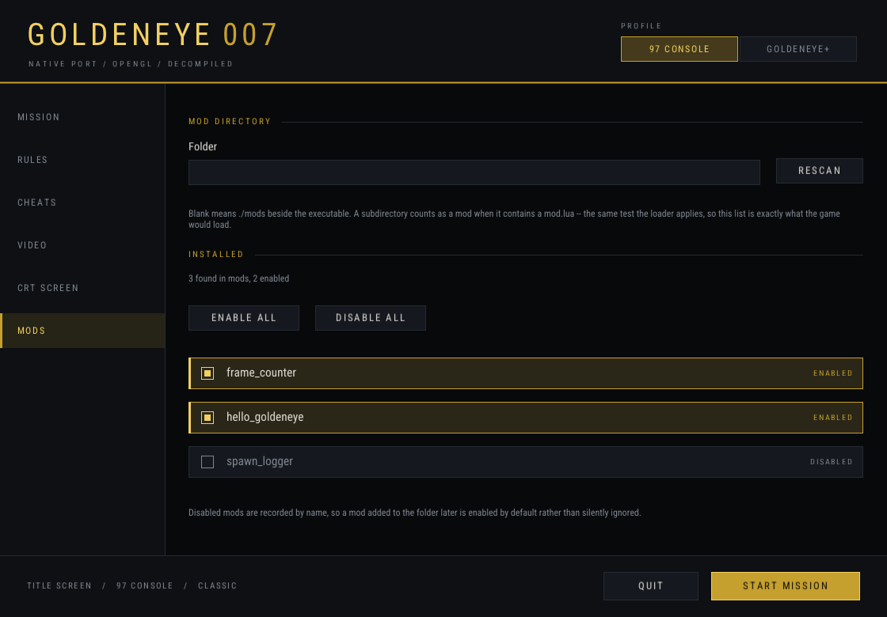
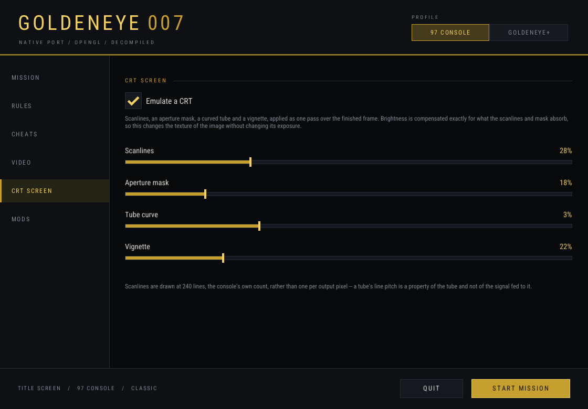

Docs version development · source
dc6294b
· last reviewed
The launcher
Everything you would otherwise set by editing a config file, in a window that opens before
the game does. This walks from first launch through starting a mission. The exhaustive
per-setting reference is Settings.
Opening it
Platform
How
Windows
Double-click goldeneye.exe. It opens the launcher by default. Play GoldenEye.cmd does the same.
macOS
Double-click getv/build-mac/GoldenEye.app, or Play GoldenEye.command in the project folder.
Any platform, terminal
./getv/build-mac/goldeneye --launcher (or build-linux, build-windows). GETV_LAUNCHER=1 does the same thing.
Skip it
Omit --launcher to boot straight into the game with your current settings. On Windows, where the launcher is the default, use GETV_LAUNCHER=0 — intended for scripted runs.
On macOS the app has to stay beside the
goldeneye executable, including when you move the build folder. It runs the binary
next to it; it does not contain its own copy of the game. ./getv/build_mac.sh bundle
recreates the app for an existing build without recompiling.
Two things worth knowing first
The launcher does not compete with your config file — and does not write it.
Every control resolves to a GETV_* setting that already worked from a shell, and
each one opens showing the value the config layer just resolved. So it reflects your
goldeneye.cfg rather than overriding it, and choices you make here apply to
this launch. To keep a preference between sessions, put it in
goldeneye.cfg — see where that file lives.
Pressing Play restarts the process, on purpose.
76 of the port's settings are read once into a static on first use, so changing one after the
game has started would silently do nothing for most of the surface. The launcher therefore
sets the environment and re-executes the binary with the launcher flag removed, so the game
begins in a process where nothing has been read yet. That is why it is a launcher and not an
in-game options menu.
Base Game or GoldenEye+
The first choice, at the top of the window. It decides how much of the
rest of the launcher you can reach.
Base Game
The original game. N64 graphics, 4:3 framing, three-point filtering and a retail-size
reticle. It suppresses Brutal effects, all Lua mods, launcher cheats, custom gameplay
balance, horde, co-op, forced unlocks and netplay.
Still yours to set: resolution, fullscreen, vsync, audio, the save
location, your frame rate, and your controls and mouse response. Controls
and Timing stay editable.
GoldenEye+
Everything this port has added. Choose it to customise gameplay and image quality.
The equivalent config line is preset = plus, which
turns on supersampling, MSAA, anisotropic filtering, mipmaps, HD textures, parallax, FXAA, a
0.6 crosshair and an uncapped frame rate on the real clock.
In Base Game the
CO-OP, GAMEPLAY, CHEATS and
MODS pages are shown but disabled, with a hint saying why. Base Game is enforced
after the config file and command line have been parsed, so an older config cannot re-enable a
conflicting setting behind your back. It does not rewrite your config file either way.
Base Game replaced the earlier 97 Console label; the config key is
base_game, with base_only as an alias.
The eight pages
In the order they appear down the left-hand side.
1. MISSION
Game start chooses between Original game start, which boots to the
title screen, and Mission selector, which boots straight into the mission you pick.
The mission list stays visible but disabled for a title-screen start. Both modes allow either
choice, and the button at the bottom reads Start Game or
Start Mission to match.
Solo campaign and Multiplayer arenas are the two lists.
All 27 loadable stages boot; the multiplayer setup has all 64 characters, the radar, and every
watch page.
2. CO-OP PARTIAL
Loads a single-player mission with two to four players sharing it in split screen. This is
bring-up, not a finished feature: the mission's objectives, AI and cutscenes are written around
a single Bond, so the extra players are present rather than accounted for. It is distinct from
multiplayer, which uses its own arena setups.
Team options holds coop_friendly_fire (off by default —
everyone starts on one pad facing the same way, so with it on the first shot usually finds a
team mate) and coop_respawn, 0–30 seconds, default 5. Zero waits for a
button press instead. If everyone is down at once the mission is lost and nobody returns.
3. GAMEPLAY
Gameplay preset picks a ruleset: classic (as shipped, and
completely silent), hardcore, survival, chaos or
horde. Balance exposes the nine individual percentages that a
preset sets, and any one of them overrides the preset — hardcore plus
ammo = 200 is a hardcore run with generous ammo.
Brutal GoldenEye is the gore family: Enable Brutal effects is off
by default and, when ticked, selects explosion-triggered gibs if no trigger is chosen yet.
Blood is original / enhanced (default) / excessive, with
a persistent-stain cap of 16–512, default 128. Ordinary weapon hits do not emit added
blood yet. Blood attaches to static level triangles including walls and ceilings and fades
after roughly thirty seconds; doors and other moving objects do not receive decals.
Horde mode spawns replacements where a guard fell, growing each wave.
A refused spawn is not an error — the level's own character-slot budget is the real
ceiling, and a refused spawn just leaves the wave smaller.
4. CONTROLS
Mouse and keyboard covers mouse look, sensitivity, Y-inversion, and the
mouse_mode choice between modern (the default: mouse travel changes
camera angles directly, with no stick acceleration, turn-speed cap or carried surplus motion)
and classic (the original mouse-to-N64-stick mapping). Vehicles, network sessions
and scripted or replay input stay on Classic N64 regardless.
Bindings for selects which player you are editing — bindings are
per-player, which is what makes a mixed set of controllers workable in split screen.
Actions holds the six bindable ones: fire, aim, use, next weapon, previous
weapon, pause.
The Controls page. Button names are positional, not label-based:
a always means the physically bottom face button, including on a Nintendo pad
where that button is printed B.
A gamepad works alongside the keyboard rather than replacing it — whichever
input is being held wins, so plugging one in never takes the keyboard away. Controllers go
through SDL2's game-controller layer, so a DualSense, DualShock 4, Xbox pad, Switch Pro
controller or 8BitDo is recognised without a mapping file, wired or wireless, and both analogue
sticks are live.
5. CHEATS
The named cheats, the same list as the cheats config key and
--list-cheats. Some are marked (in-game): those need a player
context that does not exist at startup, so they are turned on from the game's own switch
instead. They are labelled rather than hidden, because a checkbox that silently does nothing is
worse than one that says so.
6. VIDEO
Renderer is macOS-only and chooses OpenGL or Metal. The choice
is remembered separately from profiles, rules and saves, and OpenGL remains the default. A
renderer that is missing or unavailable is disabled in the list and cannot be selected. If the
selected one fails to start, an error dialog offers Open launcher with OpenGL; that
recovery does not overwrite your saved choice, and nothing retries automatically. There is no
in-game hot switch.
The standard installer builds one renderer. Building the separate Metal executable
afterwards:
GETV_RENDERER=metal ./getv/build_mac.sh all
./getv/build-mac-metal/goldeneye-metal --launcher
OpenGL and Metal use separate build directories and do not overwrite each other. Installing
both automatically is tracked in
issue #53.
Display is resolution and fullscreen — there is no vsync control
here; vsync is the F9 live toggle. Image quality is
supersampling, MSAA, anisotropic filtering, field of view, FXAA, texture filtering, mipmaps,
widescreen, HD texture packs, parallax and reticle size. Crosshair colour is not a
launcher control — it is crosshair_color in the config file only.
Timing is the frame rate — see
below, because it is the one setting here with a real catch.
7. MODS
Mod directory points at whichever folder you keep mods in
(moddir). Installed lists every mod found there with a checkbox
each. A mod is a folder containing a mod.lua; that is the entire rule, and a folder
without one is skipped silently. Everything found is loaded at startup — no rebuild, no
registration list, nothing else to edit.

The Mods page. From a shell the same thing is
mods_off = crt_screen in goldeneye.cfg, or
GETV_MODS_OFF=crt_screen.
The CRT screen is a mod, not a built-in setting. It is what draws
the scanlines, the aperture mask, the curved tube and the vignette, and it lives in
mods/crt_screen/mod.lua where you can read and change it. Untick it in the launcher
and the scanlines go away. Its five values are edited at the top of that file and take effect on
the next start:
Value
Default
What it does
SCANLINE
0.28
Depth of the dark line between scanlines. 0–1.
MASK
0.18
Aperture grille: how far each column leans to one phosphor. Subtle deliberately — at full strength it eats a third of the brightness and reads as a colour bug. 0–1.
CURVE
0.025
Barrel distortion. 0.06 pulls the corners in far enough that the black surround becomes the first thing you notice, which is a bezel rather than a tube. 0–1.
VIGNETTE
0.22
Darkening toward the corners. 0–1.
LINES
240
How many scanlines the tube draws, independent of window size. 240 is the console's own count. Deliberately not one line per output pixel — a two-pixel period lands on fragment centres, every pixel gets the same darkening, and the image just dims.

Copy the crt_screen folder, rename it, and you have a working mod.
Deeper: docs/MODDING.md.
8. DEVELOPER TOOLS
Record prop usage, Debugging and Help.
This page groups the performance/debug overlay, the console hotkey, telemetry recording and
debug logging. The overlay is off by default; the console hotkey is always available and does
not depend on it.
Press backquote/grave during a game to open the command console, on either OpenGL or Metal.
console_key changes that key to any SDL scancode name (F10,
F12, grave…); an unknown name is reported and falls back to
grave. While the console is open it owns keyboard and mouse input, and closing it holds a short
release quarantine until every key and button is up, so typing Enter, Space or Tab cannot also
fire a weapon, skip a cutscene or open the watch. Gamepads stay available. Command history is
bounded to the current process and is never written to your config or to diagnostic output.
Worth reading before you turn anything up, because the obvious setting is
the wrong one.
A frame cap above 60 is refused, and off is the high-refresh setting.
GoldenEye advances its clock in whole video fields. On the default synthetic counter, one
rendered frame is one video field by construction, so the world runs exactly as fast as
the renderer — uncapped on the synthetic clock measured 812 fields per second where 60 is
correct. Choosing off also switches to the real timebase, where a field is a unit
of real time: measured 60.5 fields/sec at 456 fps. A cap never free-runs, so 120 on
the real clock still delivers 60. That is why a capped rate above 60 is either wrong or
pointless, with no third case.
framerate = 30 is the faithful setting: it pairs with a tick
divider so game time stays real (thirty updates a second times two fields is sixty) while the
frame-counted systems drop to 30 Hz. The cost of off is reproducibility —
elapsed fields become load-dependent, so no two runs are frame-for-frame comparable and
measurement should stay on 60.
Three things, bound directly rather than exposed through any menu.
Everything else in the launcher is read once at startup and fixed for the life of the process.
Key
Effect
F11 · Alt+Enter (Windows) · Cmd+F (macOS)
Toggle fullscreen
F9
Toggle vsync
F5 / F6
Field of view −10% / +10%, clamped to 50–160%
There is no in-game options page,
and that is a decision rather than an omission: the only reusable settings page in the codebase is
the Watch's, and adding to it is blocked by an explicit maintainer comment not to change the
screen-count constant until the player struct is fully shiftable.
Saves
Save data is an eeprom.bin in the platform user-data
directory, or in save_dir if you set one. It is separate from
goldeneye.cfg, and the path in use is printed at startup.
Platform
Default location
Windows
%APPDATA%\Goldeneye-Native\
macOS
~/Library/Application Support/Goldeneye-Native/
Linux
~/.local/share/Goldeneye-Native/
If a directory you set cannot be
created, persistence is disabled and the game says so rather than pretending to save. Never
attach an eeprom.bin to an issue or a pull request — a save file is game data
and falls under the same rule as a ROM.
Multiplayer, honestly
Mode
Status
Where
Split screen
DONE
MISSION → Multiplayer arenas. All 64 characters, radar, every watch page, saves persist.
Downstream of the frame-timing work. Not implemented.
If the launcher misbehaves
It reopens every time, even when I want to skip it
On Windows the launcher is the default. Set GETV_LAUNCHER=0 for
an intentional direct start. Passing gameplay arguments is also a direct start.
A setting I changed did not take effect
Check the startup log first: the game prints its renderer, config path, save
path, controllers and resolved bindings, and a non-default ruleset prints both what was requested
and what the engine actually ended up holding. If a preset wanted something your config had
already set, it says so on stdout rather than passing over it quietly.
The renderer I chose will not start (macOS)
Use Open launcher with OpenGL in the error dialog. Your saved choice
is untouched. An unavailable renderer is disabled in the list and cannot be selected at all; the
standard installer only builds OpenGL.
Explosions look like coloured confetti
That is a known byte-order symptom with its own gate,
GETV_RGBA16BE, which defaults to the corrected mode. It is not the paintball cheat.
Measurements are in
docs/COLOUR_BUGS.md.
Something else
See Known bugs first, then
Help from an agent for how to report it with the evidence that
actually gets it fixed — and never with a ROM, a save or a built binary attached.
 Goldeneye-Native
Goldeneye-Native